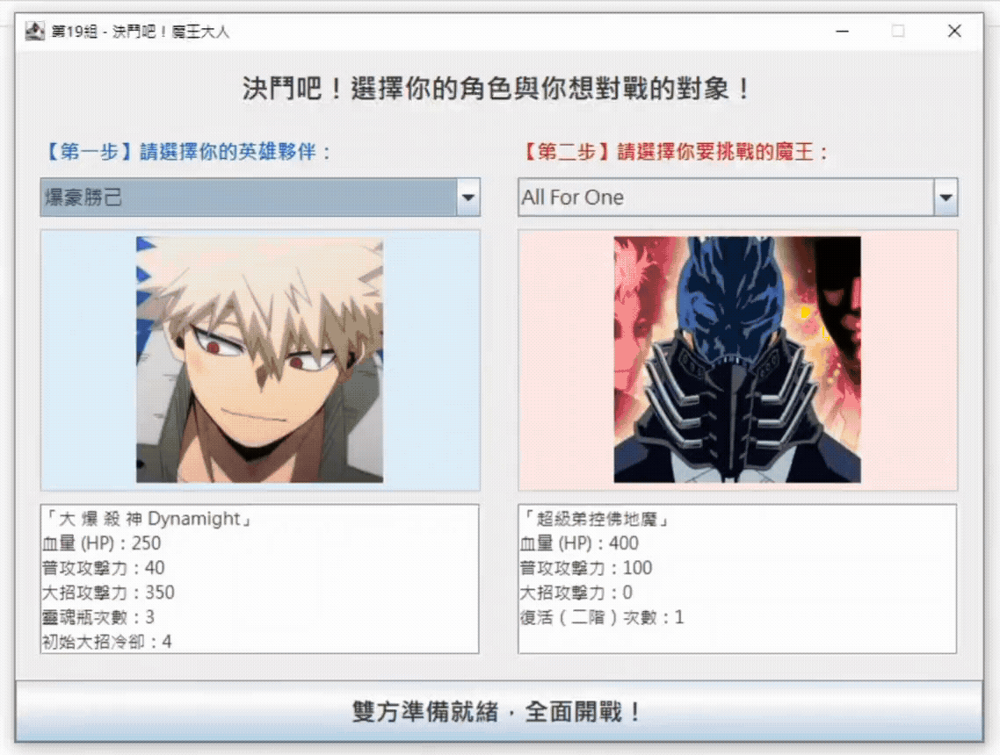

爆豪勝己、成步堂龍一、宮野真守，誰能阻止艾連葉卡的毀滅計畫？
※ 需安裝 Java 執行環境 (JRE)
結合 Java Swing 打造的圖形化戰鬥介面，體驗最純粹的回合制策略！

仔細分配你的攻擊與回血時機，每一次選擇都關乎生死。善用幸運值觸發 2.5 倍爆擊傷害！
運用靈魂瓶恢復狀態，或在關鍵時刻投擲傷害道具。完全物件導向 (OOP) 架構設計，機制嚴謹。
以為打贏了嗎？大魔王可是會滿血復活的！準備好迎接始祖巨人的真正力量吧。